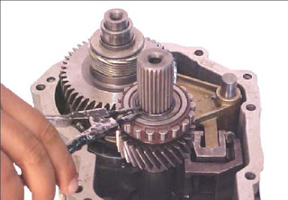

Gear Box FailureGear box is the power transmission mechanism that is used to convert torque and speed according to the need of the driver. A vehicle that has been used in the road for a long period of time faces with various problems and failures and gear box failure is one of them. A gear box failure is a serious one since it is the power transmission component of the vehicle. There are large number of failures that a gear box faces but some of the major failures and causes are listed below.
These are some of the major failure and causes of gear box failure that are commonly seen on automobile workshops, but other numerous minor failures also affect the gear box. The causes given in the table are the main reasons behind both major and minor failures. The effect of these failures are seen on a running vehicles. All the failure are the effect that is seen, After acknowledgement of such effects vehicles should be immediately taken to automobile workshops for repair jobs. For avoidance of such problems regular maintenance of a vehicle is a must. These failures can not be avoided completely but can be reduced with preventive maintenance. | |||||||||||||||||||||||||||||||||||||||